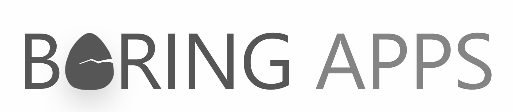

<ion-split-pane>
  <ion-menu type="overlay" contentID="content">
    <ion-header>
      <ion-toolbar>
        <ion-title>Categories</ion-title>
      </ion-toolbar>
    </ion-header>

    <ion-content>
      <ion-list>
        <ion-menu-toggle auto-hide="false" *ngFor="let p of appPages">
          <ion-item
            [routerDirection]="'root'"
            [routerLink]="[p.url]"
            [class.active-item]="selectedPath.startsWith(p.url)"
          >
            <ion-icon slot="start" [name]="p.icon"></ion-icon>
            <ion-label>
              {{p.title}}
            </ion-label>
          </ion-item>
        </ion-menu-toggle>
      </ion-list>
    </ion-content>

    <div class="footer ion-text-center">
      <ion-grid class="developedBy">
        <ion-row>
          <ion-col></ion-col>
          <ion-col size="6">
            <p class="ion-no-margin">DEVELOPED BY:</p>
            
            <p class="ion-no-margin">
              powered by
              <span class="newsApi" (click)="goToNewsApi">NewsAPI.org</span>
            </p>
          </ion-col>
          <ion-col></ion-col>
        </ion-row>
      </ion-grid>
    </div>
  </ion-menu>

  <ion-router-outlet id="content" main></ion-router-outlet>
</ion-split-pane>
